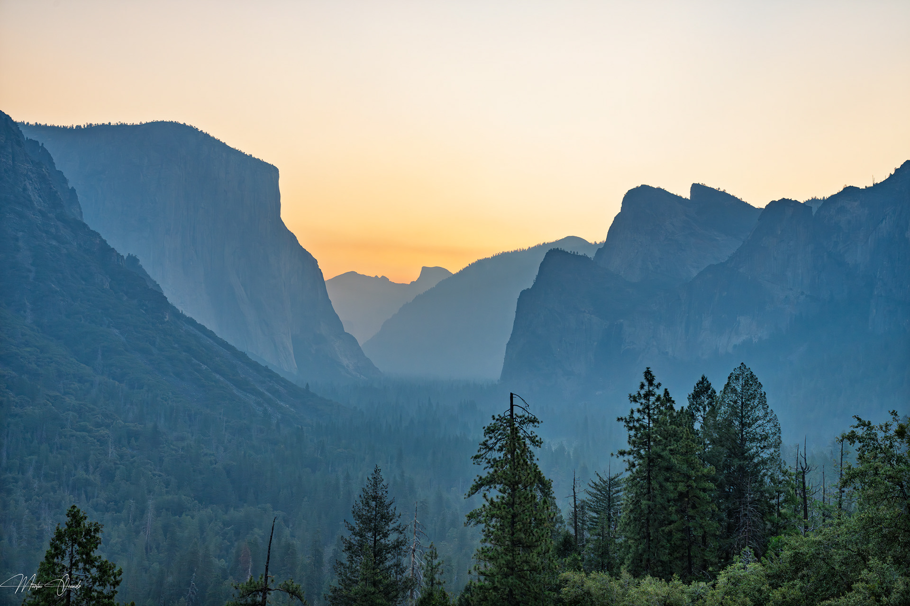
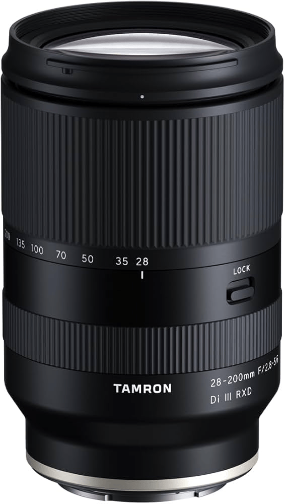
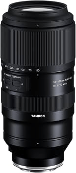
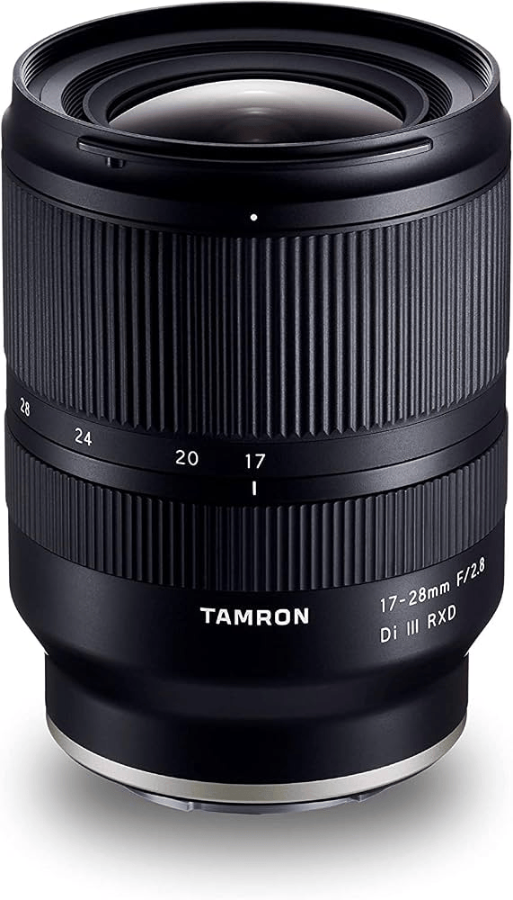

Last early September I was able to take a short trip to Yosemite. 22 hours behind the wheel and 900 miles driven got me to enjoy one of what I consider the Landscape Photographer's Dream locations.

My experience enjoying and photographing the world over the years have reached an impasse. Before and after Yosemite. I kind of felt the same, but with a different subject, when I first visited Europe in 2019, but Yosemite made me realize how amazing is God's creation. I bet there are other places that can make one feel the same, but this is my first close experience with a National Park, especially once I've longed to visit from back in my younger age.
But this article is about my 3rd phase of switching gear. Lenses this time only, my A7R V is here for the long run.
So, after Yosemite, and researching using Lightroom's Metadata tool, I realized that after I got the Sony FE 20-70mm f/4G I have shot with it 1,320 photos. Out of those, 1,012 were shot in a focal length of 28mm or longer, and only 308 were shot at shorter focal lenght. And out of those 302, half were shot at 20mm and the rest spread across 21 and 27mm.
What this means is that I don't usually shoot too wide. And when I do, I try to go as wide as I can that, but even 20mm is not enough.
In Yosemite, you'll see that the bulk of my wider shots were taken with the Tamron 50-300mm at 50mm in vertical panorama, later stitched in Lightroom. I preferred this to handling the heavy distortion of the 20mm focal length. And while it can be corrected in post processing, is still sometimes not wide enough and if you correct too much, end up clipping important parts of the image.
Streamlining the Kit
My first Tamron lens was a 90-300 that I bought in Adorama back in 1991 on my wedding trip. It was quite cheap, I didn't had today's budget, and as a result, it was very bad in both construction and image quality. But I couldn't afford anything better. Those were film days, and in the same trip I bought a Nikon 6006 with the Nikkor 35-135mm, my first AF with the screwdriver drive. Remember those? Super noisy and slow as a snail.

So, after the Lightroom investigation I decided to pull the plug and invest on a lens I've been eyeing for quite a while, thinking why I didn't see it in the beginning. Is the Tamron 28-200mm f/2.8-5.6. It has extremely well reviews from many photographers, especially for landscape and travel. As I mentioned recently in a DPReview post, super zooms are not what they used to be. Years ago thinking on a super-zoom was like wasting money on a lens that was too slow and too soft to be of any value. This is no longer the case, especially with this lens. Tamron has really gone a long way in quality. Maybe one of the reasons is that the higher stock owner is Sony.
I then thought that I'll use this lens for traveling whenever I need the extra reach, and the 20-70mm when I need something wider. After a few weeks I realized that I favored the 28-200 in every respect because of the extra reach and wasn't grabbing the 20-70mm anymore.
This now creates redundancy and quite a big overlap with the 50-300, so the logical option is to replace it with the 50-400mm.
The 35mm f/2.8 is a nice and compact lens, and a good way of restricting when doing street photography, which I do like once or twice a year as much, so it basically gets very little use. The 28mm side of the 28-200 is also 2.8, so I rather carry that and have the advantage of the extra reach.
The Big Gun
So, I sold the 20-70mm, the 35mm and the 50-300mm and bought a Tamron 50-400mm. Is a big and heavy fellow, I'm eating my words when I switched from Canon APS-C to Micro 4/3s back in 2012 saying that I was tired of carrying a Tokina 400mm prime around which weighted like a fire engine. Although this time I have a 61MP Full Frame sensor to render those beautiful millimeters, so I'm quite happy.
For now :)


What's next
One thing is for sure, one can't stay put in photography. You'll always looking for the next piece of gear, and while I'd want to settle with this kit, I know me and I'll keep looking for something else to get it better and more flexible. I'm now missing on the wide side. And I wasn't settling on the 20mm. If I'm going wide, I want really wide, so myt options are a 16mm prime or a 16-35, 16-30, 17-28 or similar range. A 14-24 sounds great but I don't think I'll ever want to go that wide. Besides, most of them don't accept filters, so right now the Tamron 16-30mm is looking like the right option. Although the Tamron is quite new, and the price is as high as the 50-400mm, which I find a bit too much for a lens that won't get much use.
So, finally settled on the 17-28mm. Is only 1mm less wide than the 16-30mm, but I found a used unit in great shape for less than half of the price of any other option.